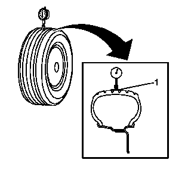
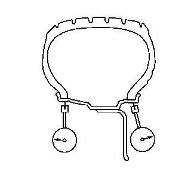
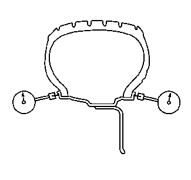

6.将轮胎和车轮总成安装在旋转式车轮平衡机上。将锥体穿过中心导孔背面，将轮胎和车轮总成安装在平衡机上。

7.用胶带 (1) 沿每个轮胎的胎面中心部位包裹住轮胎外周。用胶带包裹胎面应使径向跳动的读数平稳、准确地得到。
11.缓慢地旋转轮胎和车轮总成一圈以上，测量总的径向跳动量。
规格
轮胎和车轮总成的最大径向跳动量 - 车下测量：1.27毫米（0.050英寸）
15.缓慢地旋转轮胎和车轮总成一圈以上，测量总横向跳动量。忽略因侧壁帘布层搭接头导致的任何跳变，获得平均跳动测量值。
规格
轮胎和车轮总成的最大横向跳动量 - 车下测量：1.27毫米（0.050英寸）

19.使轮胎仍旧安装在车轮上，然后将千分表置于轮辋凸缘的水平外表面上，使千分表与轮辋凸缘表面垂直。除非车轮设计不允许，否则，应在内外轮辋凸缘两个部位测量车轮跳动。忽略因漆点、碎屑或焊缝导致的任何跳变。

23.使轮胎仍旧安装在车轮上，然后将千分表置于轮辋凸缘的垂直外表面上，使千分表与轮辋凸缘表面垂直。除非车轮设计不允许，否则，应在内外轮辋凸缘两个部位测量车轮跳动。忽略因漆点、碎屑或焊缝导致的任何跳变。